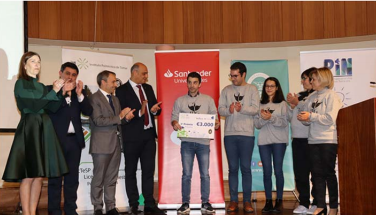

Nome: Pedro Daniel Lourenço Gaspar
Data de nascimento: 21-11-1988
Nacionalidade: Portuguesa
Género: Masculino
Localidade: Guarda
Corporate Functional Safety Test Tecnician
Químico
IPG - Mestrado em Sistemas Integrados de Gestão - inscrito:
Competências e Plano de estudos Sistemas Integrados de GestãoUBI - Licenciatura em Bioquímica - realizei mobilidade com o programa ERASMUS+ na Universidad de Cordoba (Espanha)
Plano de estudos Bioquímica CompetênciasAuditor de Sistemas Integrados de Gestão: Qualidade, Ambiente e Segurança
...
Participação na 16º edição do concurso Poliempreende (Concurso de Vocação Empresarial). Destaque para:
1º lugar a nível regional
3º lugar a nível nacional
Com o projeto HEF (Hydroponic Evolotion Farm)
 Alunos do IPG desenvolvem projeto para cultivo de cherovia em hidroponiaMembro do Conselho Pedagógico da Escola Superior de Tecnologia e Gestão (ESTG)
...
Na vida, ao contrário do xadrez, o jogo continua após o xeque-mate
- Isaac Asimov